No Pixel Left Behind: Filling Gaps in Anime Colorization GapFill: アニメ調彩色における塗り残しの解消を支援するツール
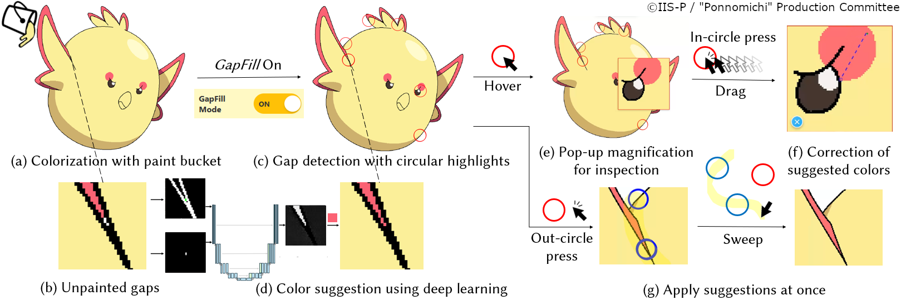
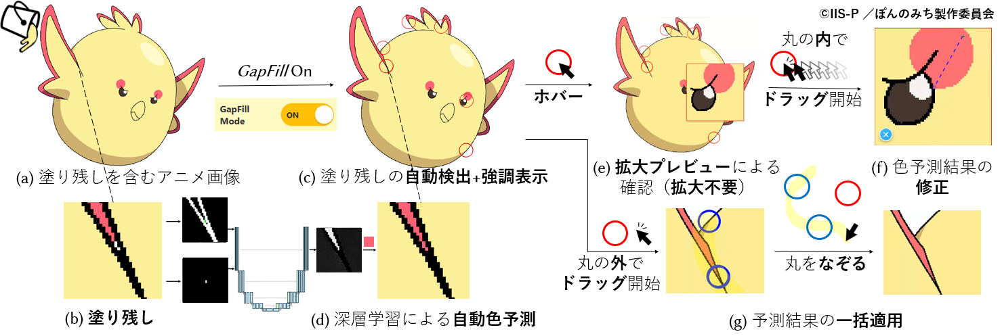
Abstract概要
Animation production workflows often involve digital colorization of line art, where small unpainted regions (“gaps”) frequently occur and remain an underexplored challenge. We conducted a formative study in Japanese animation (anime) pipelines and found that while the paint bucket tool is widely used for base coloring, tiny enclosed areas are frequently overlooked, resulting in time-consuming manual detection and filling. We introduce GapFill, a tool grounded in professional practices that reduces the effort of gap detection, zooming, and color selection. Our deep-learning method suggests appropriate fill colors by referencing surrounding regions, leveraging the flat-color nature of anime-style images. In a user study with 13 professional colorists, our system improved performance and usability in gap-filling tasks over conventional methods. The study also suggested that prediction accuracy alone is not the primary factor for usability, that appropriate colors can be contextually ambiguous, and that GapFill can complement existing tools depending on users' trust in new AI-powered assistance.
本研究では, アニメ制作現場における彩色工程を対象に事前調査を行い, ペイントソフトによる下塗り作業で塗りつぶし（バケツ）ツールが広く用いられている一方で, 小さな未着色領域（「塗り残し」）が頻繁に発生し, 既存ツールでは十分に対処されていない現状を明らかにした. これを踏まえ, 現場の制作慣行に即した塗り残し解消支援ツール「GapFill」を提案する. 提案ツールは直感的な操作性を通じて, 「塗り残しの検出」「拡大操作」「色選択」といった従来では避けられなかった反復的作業の負担軽減を主目的としている. 内部の色予測機能は, アニメ調画像特有のベタ塗り的配色に注目し, 周辺領域の対応関係を参照して間接的に色を推定する深層学習手法によって構成されている. 13名のプロの彩色者によるユーザスタディの結果, 本ツールは従来ツールに比べて塗り残し修正作業の効率性と有用性を向上させることが確認された. さらに, 有用性には色予測精度以外の要素の寄与も大きいことや, 塗り残しの色選択に一意の正解がない場合もあること, 本ツールが既存ツールを補完する形で柔軟に活用できることが示唆された.
Web Demo (Used in the user study)Webデモ（ユーザスタディで使用）
Temporary URL: https://gapfill-webtest-855.pages.dev/ 仮URL: https://gapfill-webtest-855.pages.dev/
Demo Videoデモ動画
Background and Conventional Methods背景と従来手法
Manual colorization of line art with flat colors using the Paint Bucket (Flood Fill) tool. Small enclosed areas often remain unpainted (“gaps”) due to unintended line intersections especially at sharp corners. These gaps are often difficult to detect and time-consuming to fix manually. 線画をバケツ（塗りつぶし）ツールによって彩色（ベタ塗り）する際, 鋭角部などで意図しない線分の交差が生じることにより, 小さな閉領域が塗り残されてしまうことが多い. このような塗り残しは発見が難しく, 手作業で修正するには時間がかかる.

Manual colorization of line art using the Paint Bucket tool. 線画をバケツツールによって彩色している様子.
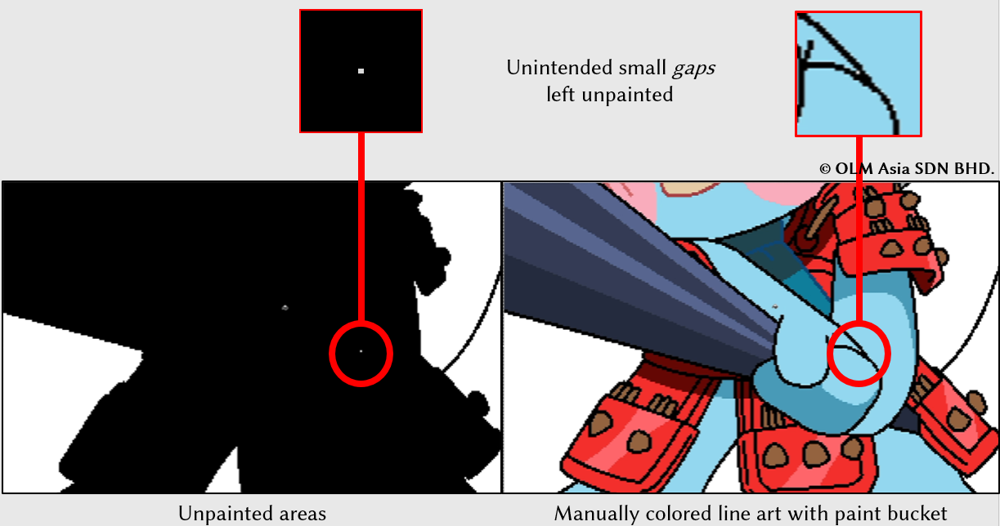
Small enclosed areas often remain unpainted (“gaps”) due to unintended line intersections especially at sharp corners. 小さな閉領域は, 特に鋭角部における意図しない線分の交差によって, 「塗り残し」として残ることが多い.
Below are the conventional methods for addressing unpainted small gaps that were identified through our formative study.
(reference: https://tips.clip-studio.com/en-us/articles/591)
以下は, 事前調査を通じて明らかになった, 塗り残しに対処するための従来手法である.
(参考: https://tips.clip-studio.com/en-us/articles/591)
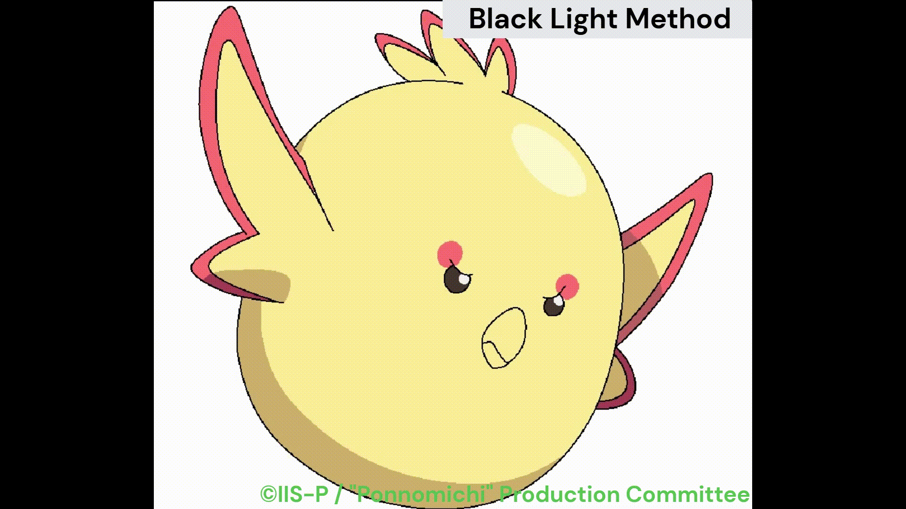
(a) Black Light Method: Temporarily replace all colors with black in a single click, making gaps appear as white dots for easy detection. (a) ブラックライト法: 全ての塗りをワンクリックで一時的に黒に置換することで, 塗り残しを白い点として可視化し, 検出しやすくする.
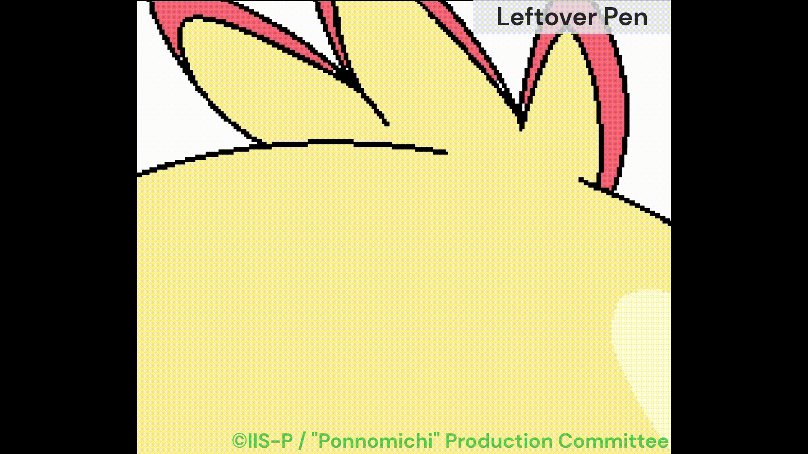
(b) Leftover Pen: Fill all enclosed areas along the stroke with the specified color. (b) すきま塗りペン: ストローク中に存在する全ての閉領域を, 指定色で塗りつぶす.
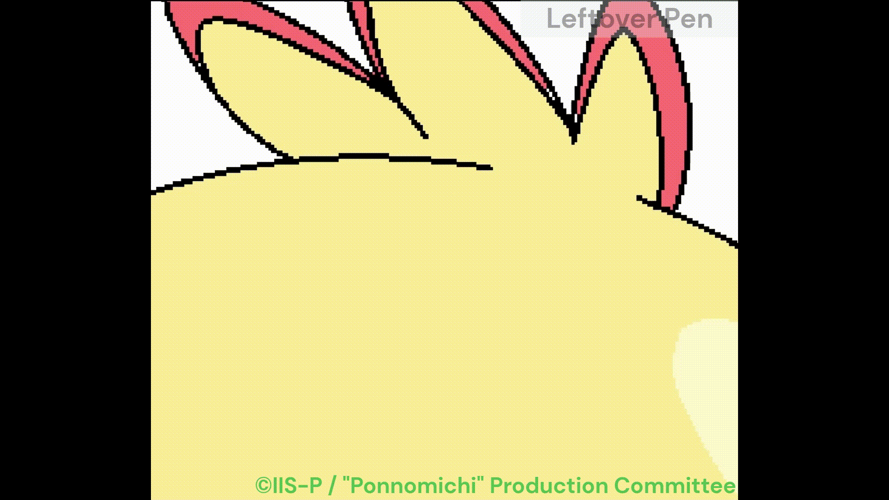
(c) Enclose and Fill: Fill all gaps within the enclosed area using a lasso-like tool. (c) 囲って塗るツール: なげなわツールで囲まれた領域に含まれる全ての閉領域を, 指定色で塗りつぶす.
While these tools are convenient, the process still requires repetitive actions such as detecting gaps, zooming, and selecting colors. これらのツールは便利ではあるものの, 塗り残しの検出, 拡大縮小操作, 色の選択といった反復的な作業が依然として必要である.
Proposed Tool: “GapFill”提案ツール：「GapFill」
Design Principles設計思想
- Reduce the manual workload in the repetitive cycle of detection, zooming, and color selection and filling.従来手法に必然的に伴う「塗り残し検出」「拡大操作」「色選択」という反復操作を省略する.
- Fill gaps using local context such as neighboring colors, reflecting artists’ reliance on local cues.塗り残し解消には主に周囲の色情報などの局所的な文脈を参照する.
- Promote practical adoption via intuitive, familiar interactions that bridge conventional workflows and support diverse, user-specific use cases.現場の彩色者が慣れ親しんている操作体系から自然に移行できる, 直感的な操作感を提供したうえで, ユーザー固有の多様な作業工程を想定する.
- Provide a tool that prioritizes human controllability rather than pursuing full automation.AIによる完全自動化を追求するのではなく, 手動による制御性も重視したツールを提供する.
Features of GapFillGapFill の機能
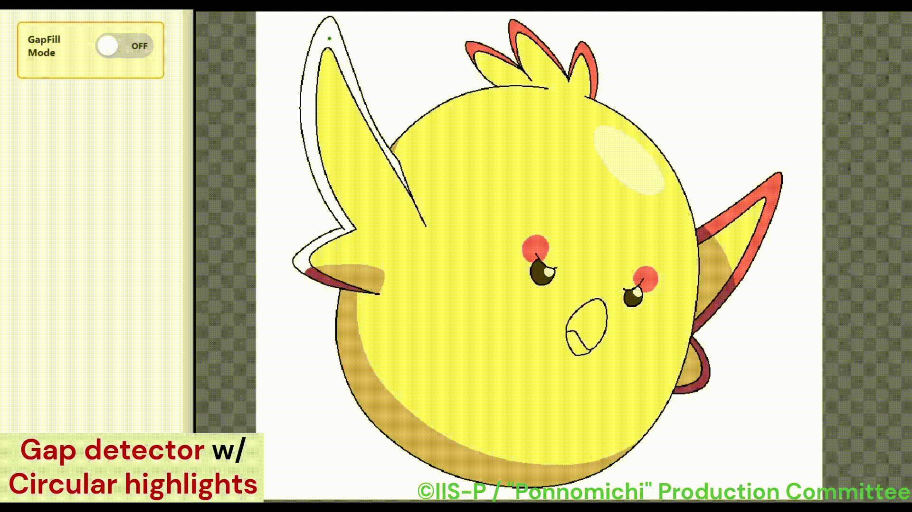
Gap Detector with Circular Highlights and Automatic Color Suggestion: GapFill automatically detects and highlights small unpainted enclosed regions to reduce the manual effort required for gap detection. It also temporarily overlays each detected gap with a predicted fill color to reduce the manual effort of color selection. 塗り残しの自動検出と強調表示, 自動色予測: 未着色の閉領域を自動検出し, 円形マーカーで強調表示する. 本機能により, 検出操作を省略できる. また, 検出された各塗り残し領域に対して, 予測色を一時的に重ねて表示する. 本機能により, 色選択操作を省略できる.
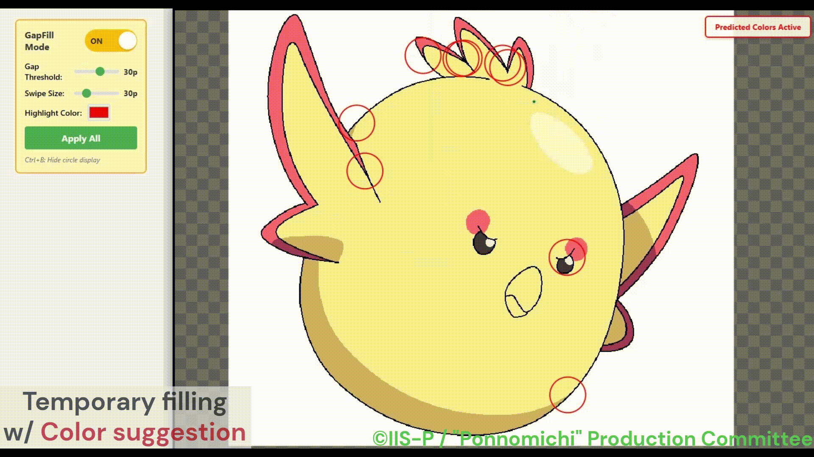
Hover-Activated Pop-up Magnification: GapFill provides a hover-triggered localized magnification around each detected gap within the highlight, reducing the need for manual zooming during quick inspection. ホバー式ポップアップ拡大: 強調表示上にカーソルがある間は, 局所的な拡大プレビューが表示され, 塗り残し周辺を即座に確認できる. 本機能により, 拡大操作を省略できる.
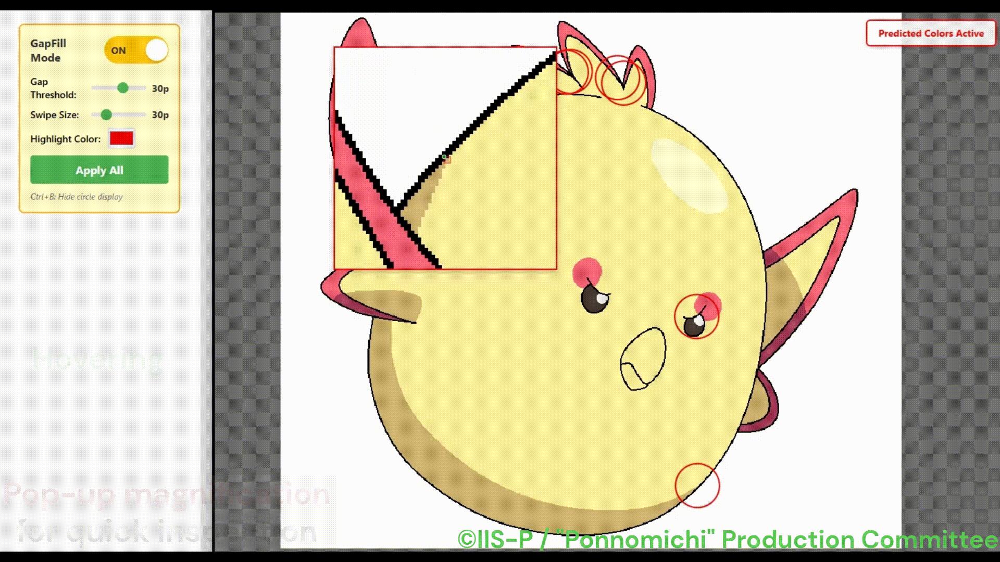
In-Circle Color-pick for Correcting Colors: GapFill provides manual correction of AI-suggested fill colors through a familiar color-picker interaction within the highlight, allowing users to efficiently resolve few mispredicted gaps without manual zooming. 予測色の手動修正のための円内カラーピッカー: カーソルが強調表示内にある状態での, 馴染み深いカラーピッカー操作を通じてAIの提案色を手動で修正でき, 拡大操作を行うことなく少数の誤予測が解消される.
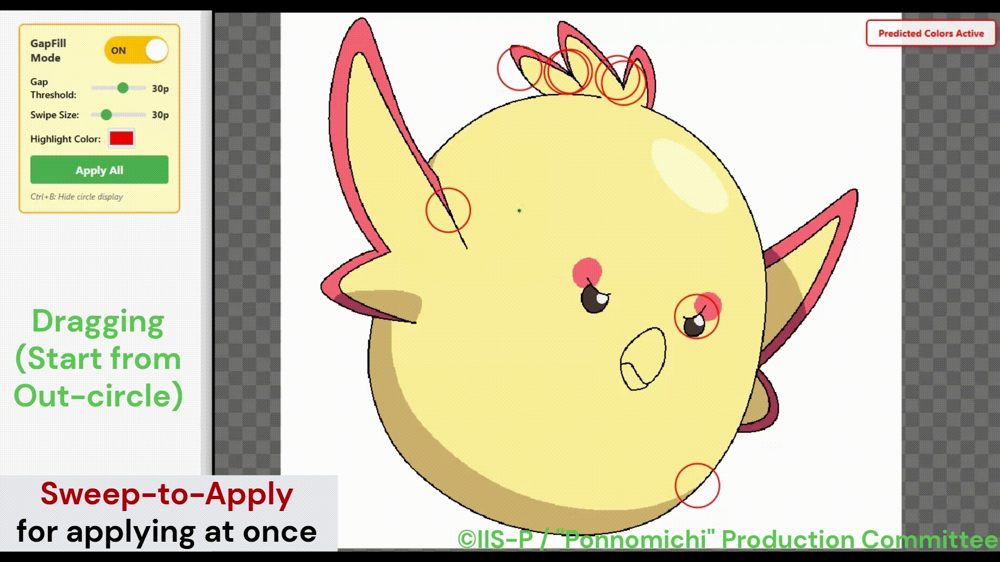
Out-Circle Sweep-to-Apply and Apply-All Button: GapFill supports batch application of AI-suggested colors via a familiar brush-like interaction when the cursor is outside the highlight, enabling efficient filling of multiple gaps. 予測色の一括適用のためのスイープ操作: カーソルが強調表示外にある状態での, 馴染み深いブラシ操作を通じてAIの提案色を一括適用でき, 複数の塗り残しが効率的に解消される.
Method for Automatic Color Prediction自動色予測手法
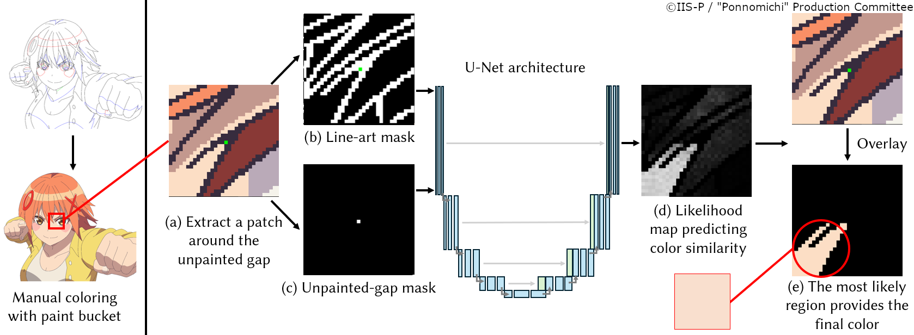
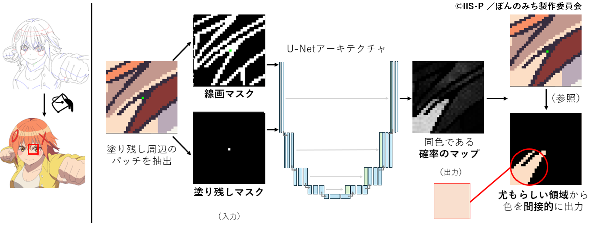
We use an indirect color prediction approach that learns correspondences between regions rather than predicting colors directly. By leveraging the flat-color characteristics of anime-style images and the color-independent nature of unpainted gaps, our U-Net-based model predicts which surrounding large region shares the same color as the target gap and robustly suggests an appropriate fill color. 色を直接予測するのではなく, 領域間の対応関係を学習する間接的な色予測手法を用いている. アニメ画像特有のベタ塗り表現の特性と, 塗り残しの発生が色に依存しないという性質を活かし, U-Net ベースのモデルによって対象となる塗り残し領域が周辺のどの大きな領域と同色であるかを推定し, 適切な塗り色を頑健に提案する.
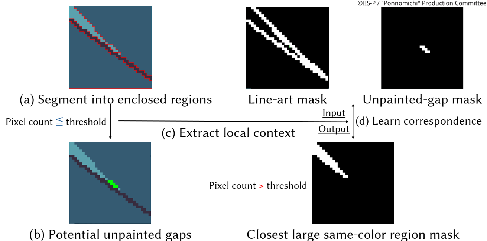
We create a synthetic training dataset by extracting line art, segmenting it into enclosed regions, and treating small regions below a pixel threshold as potential unpainted gaps. Using local image patches centered on these regions, the model is trained to associate each gap with the nearest large same-color region. 線画を抽出して閉領域に分割し, 画素数が閾値以下の小さな領域を潜在的な塗り残しとして扱うことで, 学習用データセットを構築している. これらの領域を中心とした局所的な画像パッチを用いて, 各塗り残しを最も近い同色の大領域と対応付けるようモデルを学習させている.
Special Thanks謝辞
This project is based on results obtained from GENIAC (Generative AI Accelerator Challenge, a project to strengthen Japan’s generative AI development capabilities), a project implemented by the Ministry of Economy, Trade and Industry (METI) and the New Energy and Industrial Technology Development Organization (NEDO), Japan Grant Number JPNP20017.
This work was also supported by JST, CRONOS, Japan Grant Number JPMJCS25K1.
Finally, we thank the professional colorists at OLM Asia SDN BHD for their participation and valuable feedback in our formative and user studies,
and we also express our sincere gratitude to the members of ©IIS-P / Ponnomichi Production Committee for kindly providing the image data.
本プロジェクトは, 経済産業省と国立研究開発法人新エネルギー・産業技術総合開発機構（NEDO）が実施する, 国内の生成 AI の開発力強化を目的としたプロジェクト「GENIAC（Generative AI Accelerator Challenge）」の成果をもとに作成されました.
また, 本研究は, JST CRONOS JPMJCS25K1 の支援も受けたものです.
最後に, 事前調査およびユーザースタディにご協力いただいた, OLM Asia SDN BHD所属のプロの彩色者の皆様,
そして画像データを快く提供してくださった「©IIS-P ／ぽんのみち製作委員会」 の皆様に深く感謝いたします.
Citation引用